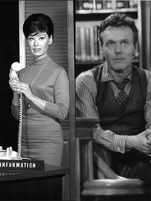

For a lot of people, the word "library" is synonymous with "silence"; and that's probably because the image is so embedded in pop culture.
Librarians are not just book babysitters. They embrace knowledge, they raise awareness of social issues, and they are curious and love curiosity.
The 21st Century School Library Media Specialist doesn't need to be Barbara Gordon or Rupert Giles to challenge old stereotypes; we can break down stereotypes by demonstrating how innovative and vital the library and librarians can be.
To read articles by, and about, great school librarians, visit the School Library Journal's website.